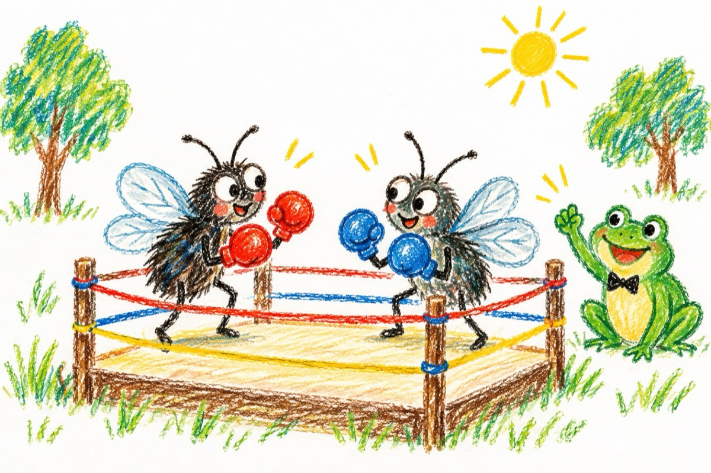

Marea gală
Forfotă și-nghesuială, mare gălăgie mare,
În poiana din pădure, întâlnire epocală!
Cei sosiți cu mic cu mare stau, acum în așteptare.
Se-ntâlnesc toți bătăușii, într-o mare, mare gală.
Box - comandă un broscoi, aprig și nerăbdător,
Muștelor ce îndârjite își dispută,
Meciul carierei lor.
Dau în stânga și în dreapta, prinse într-o mare luptă.
A învins, e campioană, dolofana roșcovană!
Lumea sare în picioare, unduind val după val,
Musca-și arcuiește mușchii, cu tărie de aramă,
Dar broscoiul o înghite dându-i premiul special.
Semimusca, sus, în ring e încadrată;
Colțul roșu, de un încruntat bondar,
Cel albastru-o musculiță, în tot felul colorată.
Asistența huiduie că arbitru-i un ’’măgar’’!
Lupta-i crâncenă și dură și cu totul inegală
Dă bondaru-n musculiță și-o lovește sub centură,
Iar arbitru un bursuc, nu-i face nici o morală,
Lumea fluieră și zbiară, plină de atâta ură.
Un cocoș cu o mărime, aproape pe jumătate
Cu un altul mai înalt și mai vânjos
Intră-n luptă și-ntre corzi aprig se zbate
Celălalt nu reușește decât tăvălit pe jos!
Cioc în cioc se încleștează, iar din creste sângerează
Își dau gheară după gheară, zboară penele pe sus
Uliul care-i arbitrează,
Înghițând în sec așteaptă, ca să-l ia pe cel răpus.
Mândru, țanțoș, suflecat până la coate
Alt cocoș ager, cât se poate de fălos,
Sare-n ring, aripa-și bate
Așteptând cu îngâmfare, să vină cocoșul roș.
Iar acesta, prins de ploaie și de frică,
Tremurând și oftând pe lângă ring
Nicidecum nu se ridică;
Se chircește parcă-i - apucat de frig.
Semigreii ca din umbră, stau la pândă,
Râsul vesel și cu un viclean vulpoi,
Arbitru un iepuraș, strigă tare să se-audă:
„Lupta voastră va începe, când voi spune unu - doi.”
Corzile se-ntind, zbârnâind precum e arcul,
Pumnii cad ca bolovanii,
Râsu-i vai de el săracul,
Vulpoiul e campion și-a adus cu el toți fanii.
Greii, greu pășesc pe ring
Colțul roșu, lupul cu al său rânjit
Cel albastru, Moș Martin: „O să-l bat de o să-l sting! ...”
Arbitrați de-o oaie stearpă ce pe lup l-a și vrăjit.
Lupta crâncenă începe, bătălia e în toi,
Oaia strigă-ntr-una: „Stați opriți-vă stop, stop!”
Ursu-l bate de-l usucă aplicându-i unu-doi.
Lupul aplecat de șale, cere-ntr-una un prosop.
Gongul bate de răsună, gala noastră s-a sfârșit!
Stă un corb cu tava-n gheare,
Premiantu-i Moș Martin, bătăușul cel vestit
Asistența poate pleca la plimbare!
Vasile Groza